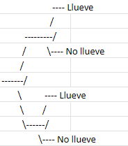
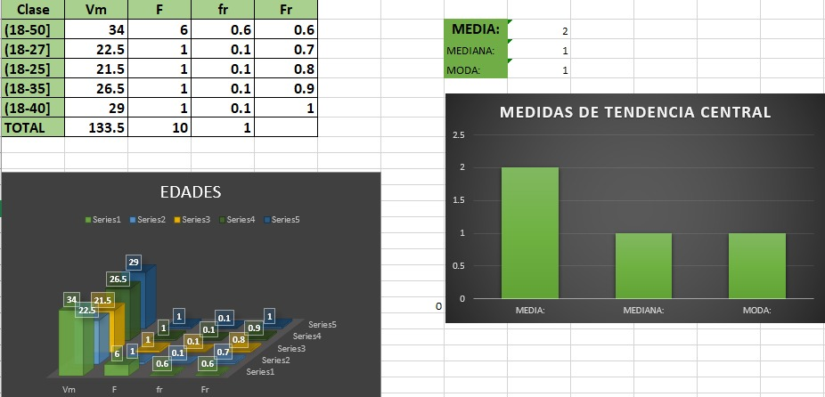

CALCULO DE PROBABILIDADES (CLASICA,FRECUENTISTA Y SUBJETIVA)
OBJETIVO
En la realizacion de este preoyecto utilizamos hojas de excel para argumentar problemas y posiblemente obtener su probabilidad utilizando tres tipos de enfoque(clasico, subjetivo y frecuentista).
CLASICA
En una fiesta infantil hay 8 niños de 5 años, 12 de 8, 7 de 6 y 5 de 10.
A) ¿Cuál es la probabilida de elegir a un niño de cada edad?


B) ¿Cuál es la probabilidad de elegir a un niño al azar?
FRECUENTISTA
Supongamos que estas interesad@ en determinar la probabilidad de que llueva en una ciudad determinada durante el mes de marzo


SUBJETIVA
Vas a tomar un vuelo y estás evaluando la probabilidad subjetiva de que el vuelo se retrase.
Considera factores como la aerolínea, la temporada, la ruta del vuelo, para asignar esta probabilidad
A) ¿Cuál es la probabilidad de que el vuelo se retrase?
2.4
DATOS DE LAS ENCUESTAS REALIZADAS A EMPRESAS
Al realizar una serie de preguntas a empresas que solicitan trabajadores decidimos adentrarnos mas al tema de horarios que manejan las mismas, las edades que son mas requeridas, el salario que ofrece cada una de las empresas entrevistadas, las cuales realizamos tablas con graficos en las que mostramos la informacion antes mencionada.
HORARIOS
Primero mostramos los datos recabados acerca de los horarios que tienen las empresas y los almacenamos en una tabla, la cual se divide en clase,valor medio(vm),frecuencia(F),frecuencia relativa(fr),frecuencia relativa acumulada(Fr), al igual que agregamos la media,mediana y moda
EDADES
En esta siguiente tabla almacenamos las edades que requieren las empresas para la contratacion del personal la cual se divide en clase,valor medio(vm),frecuencia(F),frecuencia relativa(fr),frecuencia relativa acumulada(Fr), al igual que agregamos la media,mediana y moda

SALARIOS
En esta tabla obtuvimos los salarios que pagan las empresas y cuantas de ellas son las que pagan mas y cuales menos, la cual se divide en clase,valor medio(vm),frecuencia(F),frecuencia relativa(fr),frecuencia relativa acumulada(Fr), al igual queagregamos la media,mediana y moda
CONCLUSION
Despues de realizar investigaciones y trabajos en los cuales utilizamos la probabilidad y estadistica nos damos cuenta que es algo que usamos dia a dia, no se aplica de tal forma pero se puede aplicar de diferentes maneras en nuestra vida.
Probabilidad(moda mediana moda)
La probabilidad y la estadística descriptiva analizan datos mediante medidas clave: la media (promedio), la mediana (valor central) y la moda (valor más frecuente) resumen el conjunto de datos; los cuartiles, deciles y percentiles muestran la distribución dividiendo los datos en partes iguales; y el rango, la varianza, la desviación estándar y la desviación media indican la variabilidad de los datos. Estas medidas permiten comprender y resumir la distribución y dispersión de los datos.
SALARIO
Se tiene una tabla de datos sobre salarios con intervalos de clases, valores medios, frecuencias absolutas y relativas, productos de valores medios y frecuencias, y cálculos de desviaciones respecto a la media. Además, se incluyen gráficos de barras que muestran la distribución de salarios y las medidas de tendencia central (media, mediana, moda). También presenta cálculos estadísticos como medidas de tendencia central y dispersión (rango, varianza y desviación media). Estos elementos ayudan a analizar la distribución y variabilidad de los salarios.
HORARIOS
Se tiene una tabla de clases sobre horarios con intervalos de clases, valores medios, frecuencias absolutas y relativas, productos de valores medios y frecuencias, y cálculos de desviaciones respecto a la media. Además, se incluyen gráficos de barras que muestran la distribución de salarios y las medidas de tendencia central (media, mediana, moda). También presenta cálculos estadísticos como medidas de tendencia central y dispersión (rango, varianza y desviación media). Ademas se incluye el calculo de cuartiles, deciles, y perciles .
EDADES
Se usan las medidas de tendencia central(media,mediana,moda), para el calculo de probabilidades y se pueda mejor entender la tabla y los valores que se quieren conocer, al igual se agregaron graficas para su mejor vision,También presenta cálculos estadísticos como medidas de tendencia central y dispersión (rango, varianza y desviación media). Ademas se incluyen el calculo de cuartiles, deciles, y perciles . Estos elementos ayudan a analizar la distribución y variabilidad de los edades.
CONCLUSION
Para este tercer parcial lo que se realizó y agrego a la página web que se había elaborado anteriormente fueron las tres medidas de tendencia central que fueron los cuartiles, deciles y percentiles, así como también se cálculo el rango, la desviación media y la varianza, todo esto se sacó con la información que se había recaudado anteriormente en las encuestas realizadas a empresas que solicitaban trabajadores, de la misma manera en este parcial se generó el código QR de al página web.